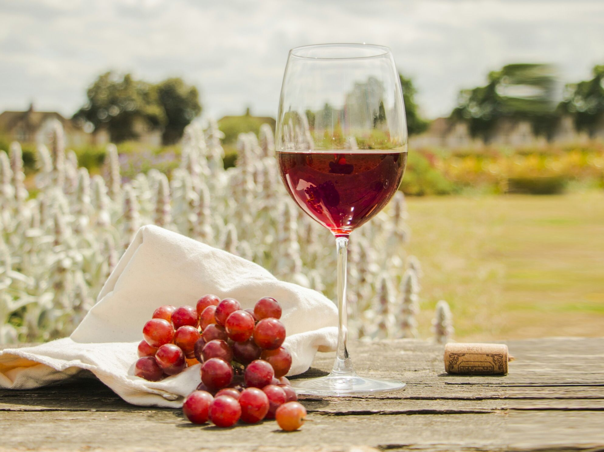
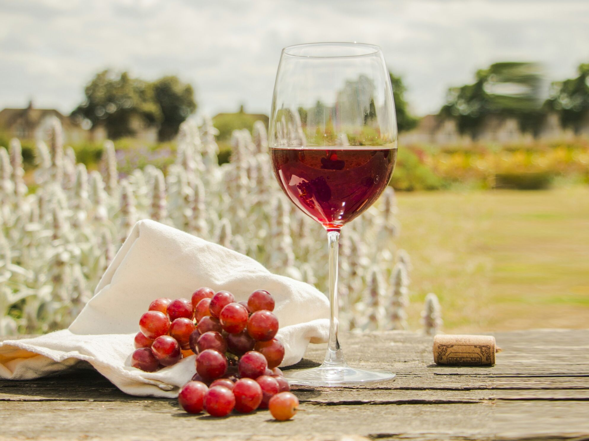

WINE
 


Wine is an alcoholic drink typically made from fermented grapes. Yeast consumes the sugar in the grapes and converts it to ethanol and carbon dioxide, releasing heat in the process. Different varieties of grapes and strains of yeasts are major factors in different styles of wine.